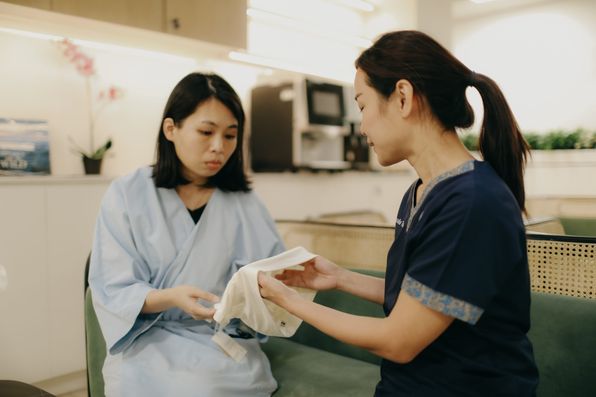
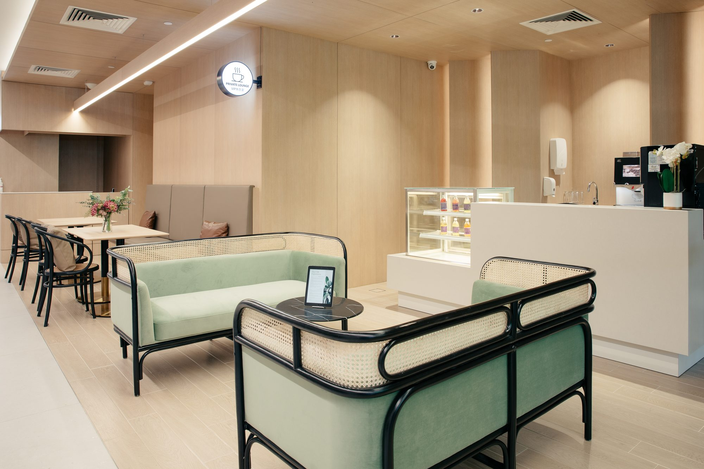
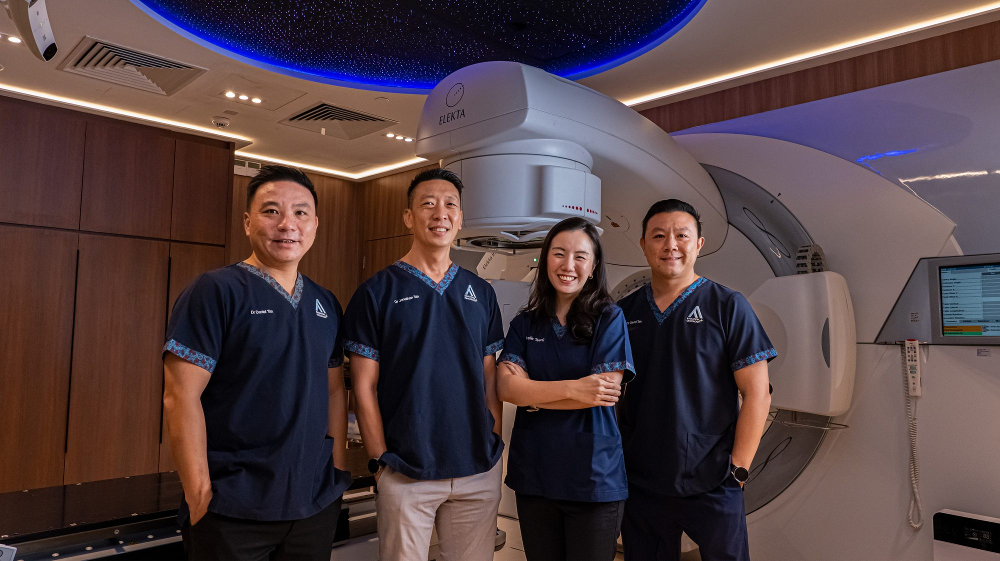
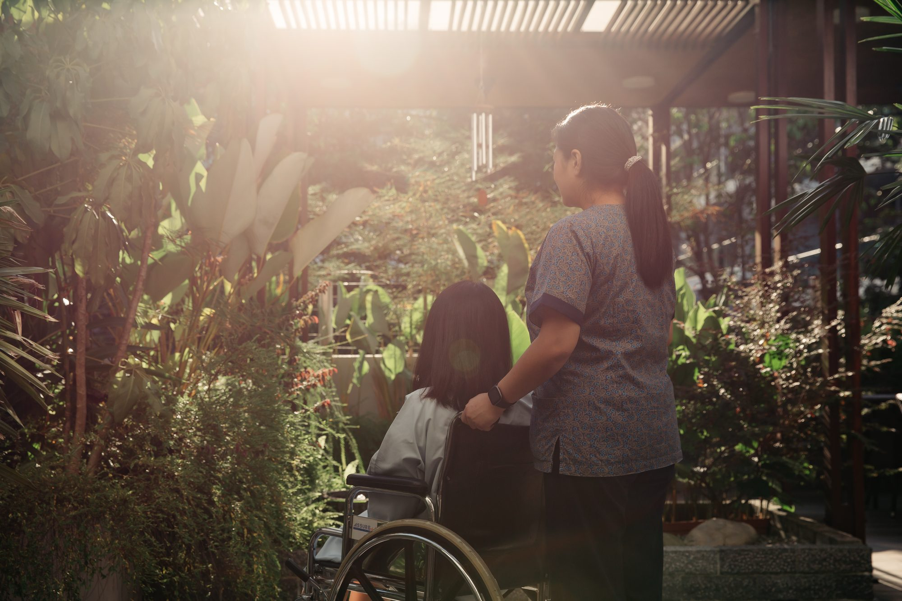

P
Pioneer expertise
The team that built Southeast Asia's first SBRT programmes. 12+ years at the frontier of radiation oncology.
Read our storyAARO is Singapore's first independent radiation oncology group, founded in 2015 by oncologists from the National Cancer Centre Singapore — the same team that pioneered Southeast Asia's first SRS/SBRT programmes. Today our multidisciplinary specialists deliver personalised, technology-led care across the full cancer journey.

Whether you have a new diagnosis, are seeking a second opinion, or need a specialist modality your current treatment plan doesn't include — AARO's oncologists work with your existing team.
The team that built Southeast Asia's first SBRT programmes. 12+ years at the frontier of radiation oncology.
Read our storyOur oncologists are trained in both chemotherapy and radiation therapy, so we recommend the right combination — or sequence — for your specific tumour.
Meet the teamSBRT, SRS, VMAT, Brachytherapy. Proprietary facility on Adam Road. Precision tools that are not standard everywhere.
Explore treatmentsClick any tile below to learn about diagnosis, screening and our treatment approach.
Dr Teh · Dr Tseng · Dr Tan
Dr D Tan · Dr Teh
Dr Tseng · Dr Tan
Dr Daniel Tan
Multidisciplinary
Dr Daniel Tan
Multidisciplinary
Dr Michelle Tseng
Multidisciplinary
Multidisciplinary
Dr Jonathan Teh
Multidisciplinary

Our seven specialists were trained at the National Cancer Centre Singapore — the institution that built Singapore's modern radiation oncology programme. Each focuses on a defined cancer area, so your case is handled by someone whose practice is dedicated to it.
Patients share their journeys through diagnosis, treatment, and life beyond cancer — with the right specialist, the right technology, and the right team.

CSR on Adam Road is the region's first dedicated radiation therapy facility — every technology and specialist, under one roof. Designed to feel like a private lounge, not a hospital.
